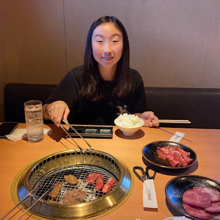
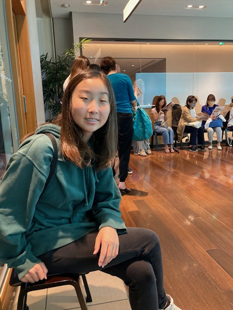
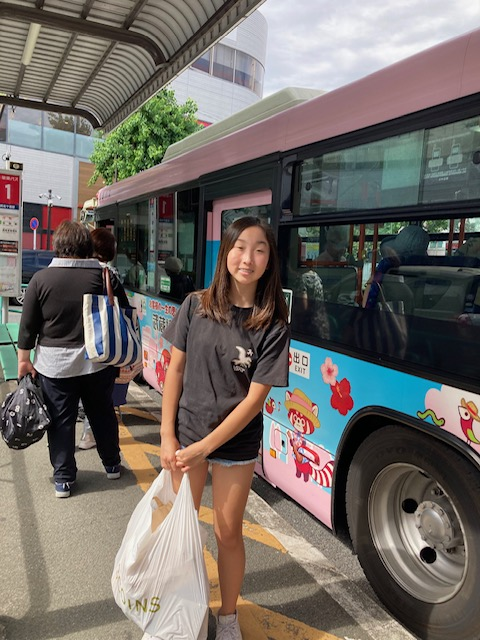

Trip to Japan
Summer of 2024
Hello, my name is Lily. My parents are Japanese and we go to Japan every few years. This website is about my trip to Japan this summer. The last time I went to Japan, I went with my brother and my mom in 2022. My brother got Covid-19 and he spread it to my mom and I, ruining our vacation. This year, we didn't bring Kai, my brother.
This year's trip was 2 weeks long and it was from June 12th to June 27th.
Day 1
At the airport, my mom got a Cafe Latte and we each got a Ham & Swiss Croissant, before boarding our plance.
After a long flight, my mom and I arrived at Narita Airport on June 13th. It was 4pm there and 12am in the US. We stayed at Narita Art Hotel. The hotel had thin walls and the bathroom smelled and on top of that, there was a loud group of cheerleaders on the same floor as us.
Day 2
My mom and I headed towards the breakfast buffet in the morning. The food was good and I got an omelet made with cheese, tomatos, and ham, while my mom had green onions, tomatos, and ham in her's. For desert there was a matcha mochi. After we ate, we went to Don Quijote and bought items tax free because I'm from the US. We found out that we couldn't use the tax-free items, but some of the items were things we needed to use. In the end, we decided to make a tiny hole and take out the things that we need.
Next, we went to Eon Mall where we got McDonalds. After we finished our lunch, we went to Uniqlo and got Toshi's pants. For dinner, we got sushi. After sushi, my mom got ear plugs because the walls at the Art Hotel was really thin and she had a hard time sleeping. Meanwhile, in the US, Kai had a golf game at Brea Creek Golf Course and got first place.
Day 3

We stayed at the Art Hotel for another day. Kai and Toshi had a parent kids golf game and they got first place. Kai was on a winning streak! It was the first time they got first place and Toshi had been practicing for this game.
We went to Uniqlo again. While at Uniqlo, my mom got a call saying that my Grandma was sick and had gone to the hospital. We were worried, but we continued on with our day. My mom and I got yakiniku and went to Shisui Premium Outlets.
Day 4
It was the last day at Narita, because we were planning to head to Tokyo, where my grandma and grandpa lived. My mom and I went to Eon Mall and I got a crepe. Afterwards, my aunt, who came to the US last year, came to pick us up, after we returned the car we had rented.
My grandma wasn't at home because she was still at the hospital. Yuri took us to a eel restaurant. My counsin and uncle came too. My grandpa didn't go though, because he wasn't feeling well. My aunt got him some food though, because my grandma wasn't home to cook my grandpa food.
Day 5
Although it is June 17th in Japan, it is Father's day back in the US, where my dad is. I give my dad my gift that I already prepped in advance.
Next, Yuri came over to pick us up. We were going to the Sky Tree. We arrived about 10 minutes before the opening time, but there was already a huge line so we decided against going. We just took a few picture outside. We went shopping and got some pie at Quil Fait Bon. I got a mix fruit pie, while my mom got berry. We got lost in the mall there, and we couldn't find our car, so Yuri, had to postpone our lunch 30 minutes. Luckily, we managed to get to the Italian Buffet called Xex Atago Green Hill, where we could see the Tokyo Tower. The food and the service was very good. It felt like I was royalty.
Day 6
I didn't really do anything on June 18th. My mom had to go through all of the paperwork that had piled up while she was in the US. She also got a doctors checkup. I went to a sushi place with my grandma and mom, though. My mom kept getting the free soup there even though we were at a sushi place.
Day 7
The 7th Day was when I was supposed to go to Kyoto with my grandma. Unfortunately, my grandma wasn't feeling 100% yet and we had decided not to go. I ordered a lion pencil case on Amazon and went shopping with Yuri.
Day 8
My mom, Mari, had to go get the results of her checkup from a couple of days ago so we went to her hospital, before getting lunch. We went to Bikkuri Donkey for lunch. After we got lunch, we stopped the house to pick up my grandma so we could go visit my other grandma's grave. Although my grandpa wanted us to visit my great grandma and great grandpa's grave too, we didn't have enough time. My grandma got flowers from a grocery store for the grave. My mom got stung by a lot of mosquito there. I was smart so I wore pants and didn't get stung.
Day 9

Unfortunately, it was raining so we couldn't go anywhere outdoors. My grandma, my mom, and I went to Din Tai Fung for lunch. In the US, my family rarely goes to Din Tai Fung and even when we do, my parents go when my brother and I are at school so we only get the leftovers. After we got lunch, we went shopping at a indoor mall.
Day 10


It was June 22 and it wasn't raining. My mom and I went to Harajuku. We had to ride a bus and train there. We got pork (かつ ) for lunch, because last time when we got pork, my mom got addicted. We got a lot of things at 3 Coins, a Japanese store. Since my dad accidentally broke a pitcher back in the US, my mom and I bought a few new pitchers and went to Don Quijote again.
Day 11
Since it was Sunday, my mom and I went with my grandma to a Japanese store where we could bulk buy snacks and food (たじまや). We bought a lot of snacks and my mom was worried that we might not be able to fit everything in the suitcases. After that, we got lunch with my uncle, who is my mom's older brother. He was a big Ohtani fan and I felt like I finally met the typical Japanese person that I've imagined. I also met my cousin, Misa. It's been a long time since I had last seen her.
Day 12
On June 24th, my mom, aunt, grandma, and I went to Kichijoji (吉祥寺). We got more snacks there, like Half Moon and Dove cookies. My aunt bought we a wooden 3D puzzle thing too. Although there were more stores we could go to, it was raining so we didn't go.
Day 13
Yuri came to pick my mom and I up early in the morning to go to Karuizawa (軽井沢). My grandma was also supposed to go, but my grandpa was worried that my grandma might get sick again. My aunt took us to get lunch and to a luxurious hotel, Marriott. It was a very nice hotel. The bath was also very nice and had a good view. For dinner, we were still pretty full so we went to the lounge where we ate some snacks. We brought home a lot of chocolate too.
Day 14
In the morning, my aunt, mom, and I went to get breakfast at the breakfast buffet. My mom and I bathed in the bath in our room. The stay was so nice that I wished that we could stay for at least a another night, but unfortunately, we had to go. We went shopping. I got erasers and pucho that was only sold there. My aunt got apple Hi Chew that was only avalible there.
Day 15
My aunt came to pick us up again. She took us to the airport and we got lunch together. We got pork again at Sabotenn (さぼてん). Apparently, my mom fell in love with the pork in Japan and really wanted some more before we left. I got katsu curry while my mom and aunt got regular pork. After lunch, I got a small umbrella that I could bring to school at the airport. Once we said our goodbye, we boarded our plane to go to the US.
That is my 2024 trip to Japan. The plane flight back to the US was faster than the plane flight to Japan. I brought a lot of snacks back from Japan and pokemon cards for my brother. Thank you for reading!